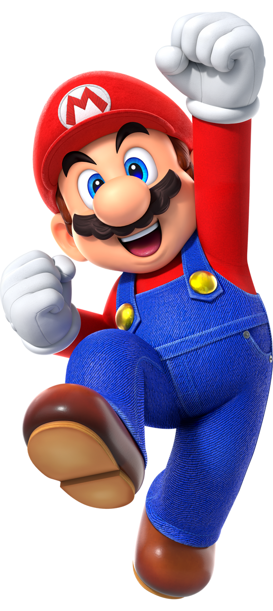
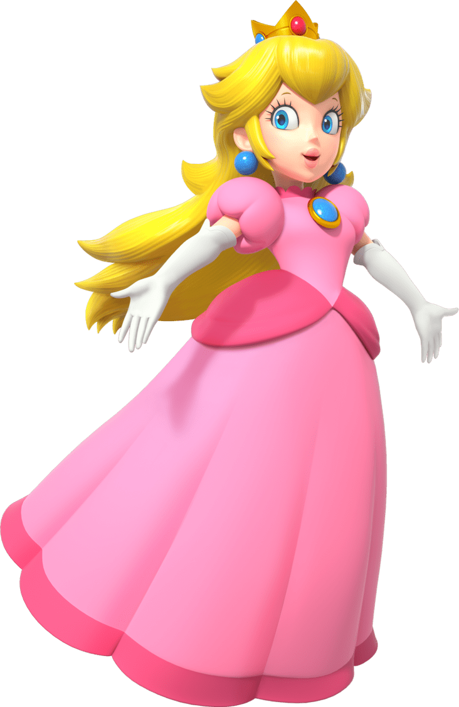
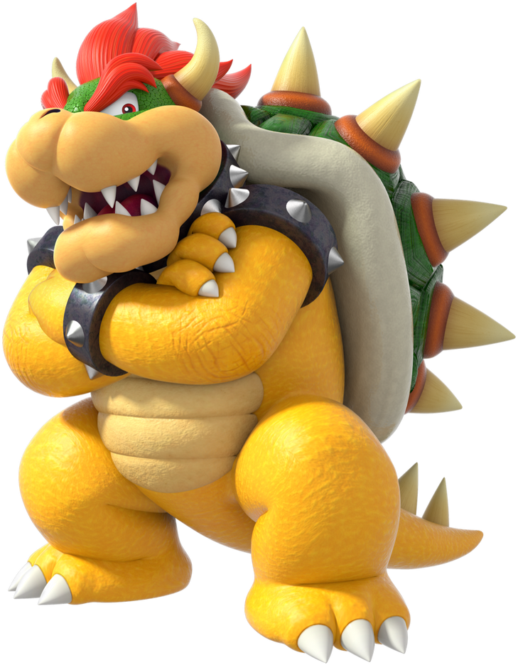
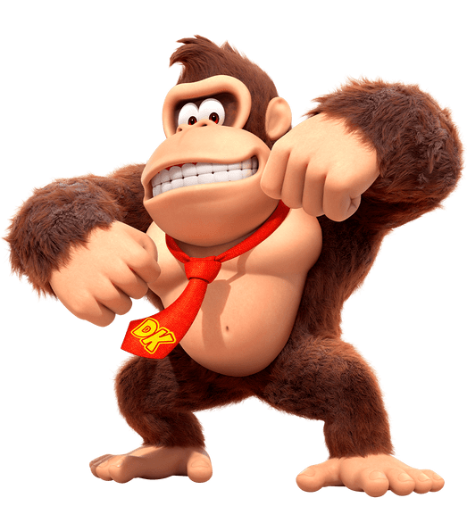
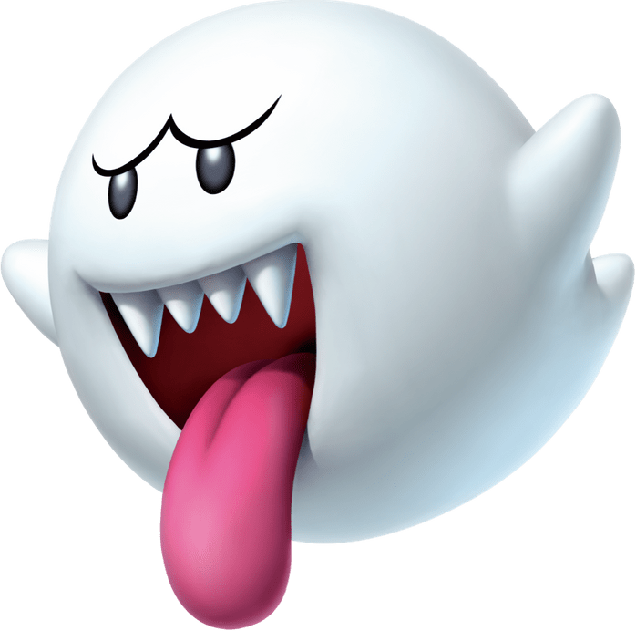

Mario Kart es un divertido juego de carreras en el que personajes como Mario, Luigi, Peach, Yoshi y Bowser compiten en circuitos llenos de curvas y sorpresas. Cada piloto puede elegir un vehículo y usar objetos para adelantar a sus rivales, mientras recoge monedas y domina los derrapes. Gracias a sus pistas variadas y a la personalidad de sus corredores, cada carrera ofrece una experiencia emocionante para jugar en solitario o compartir con amigos. Además de llegar primero, es importante conocer cada circuito, tomar bien las curvas y aprovechar los atajos. Los objetos pueden cambiar el rumbo de la competencia en cualquier momento, por lo que elegir cuándo usarlos también forma parte de la estrategia. Con sus distintos modos de juego y escenarios coloridos, cada partida ofrece nuevos desafíos y muchas oportunidades para divertirse en familia o con amigos.







Estas carreras reúnen velocidad, estrategia y diversión en circuitos llenos de curvas, saltos y sorpresas. Cada piloto elige un vehículo adecuado a su estilo, mientras recoge monedas y utiliza objetos para superar a sus rivales. Las pistas recorren ciudades, bosques, desiertos y mundos fantásticos. Dominar los derrapes permite tomar curvas con precisión y ganar segundos. Sin embargo, cualquier obstáculo puede cambiar el resultado. Por eso, conviene observar el camino y reservar los objetos para el momento justo. Competir con amigos añade emoción, risas y desafíos inesperados. Cruzar la meta deja recuerdos y ganas de volver a jugar.
En conclusión, Mario Kart combina velocidad, estrategia y diversión en cada carrera. Sus circuitos, personajes y objetos hacen que cada partida sea diferente y emocionante. Ya sea jugando en solitario o con amigos, siempre ofrece nuevos desafíos y momentos para disfrutar.